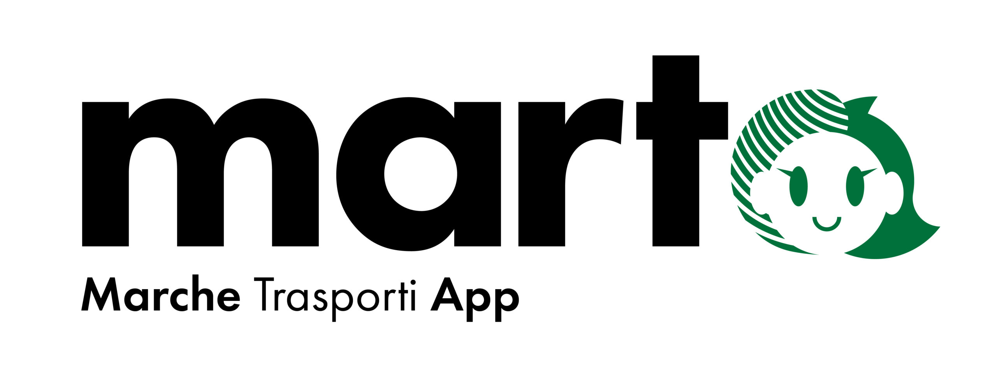

Introduzione
Durante i periodi maggio-giugno e settembre 2024 mi sono recato presso l'azienda Pluservice per la mia esperienza di PCTO.
L'azienda Pluservice
L'impresa si occupa della realizzazione di infrastrutture hardware e software per le aziende di trasporto pubblico di diverse aziende in tutta Italia, tanto che, durante il mio primo periodo di PCTO, hanno realizzato MARTA.Un sistema di bigliettazione digitale per la regione Marche, realizzando di fatto il primo sistema regionale d'Italia basato su tecnologia Account Based Ticketing, che registra i biglietti in formato digitale sull'App invece che su carta. 
Un'azienda attenta al personale
L'azienda, ha dimostrato fin dall'inizio di tenere ai propri dipenti, tanto da dedicarne diverse area della struttura come un'area svago con biliardino e ping pong e una zona palestra.
La mia esperienza
L'azienda si è dimostrata fin da subito molto accogliente. Dopo un iniziale tour del luogo di lavoro mi è stata assegnata una postazione presso i sistemisti della rete aziendale, là mi è stato spiegato il funzionamento dei server aziendali, di come realizzano le installazioni di macchinari per i clienti e come eseguono la manutenzione e formattazione dei PC.Attività Svolte
I primi giorni mi sono dedicato allo studio di Windows Server per la realizzazione di un server funzionante, se pur con qualche difficoltà sono riuscito a creare uno che facesse da server DHCP.Sempre per restare in linea con l'argomento, ma anche con le mie passioni, mi sono lanciato in 2 esperimenti:
Il primo fu la realizzaione di un Tris Multiplayer sia lato client che server. L'altro esperimento riguardante le connessioni e stata la realizzazione di "gioco" che prevedeva solo la possibilità di far connettere più giocatori fra di loro qualora uno di essi avesse aperto una sessione come server.
L'ispirazione è stata il gioco Minecraft che permette di aprire un mondo (partita) a tutti gli altri giocatori collegati alla stessa rete dell'host.
Il tempo richiesto da queste due attività non è stato molto, per tanto ho continuato a realizzare altri piccoli giochetti e studiarmi nuove librerie del C# e non solo.